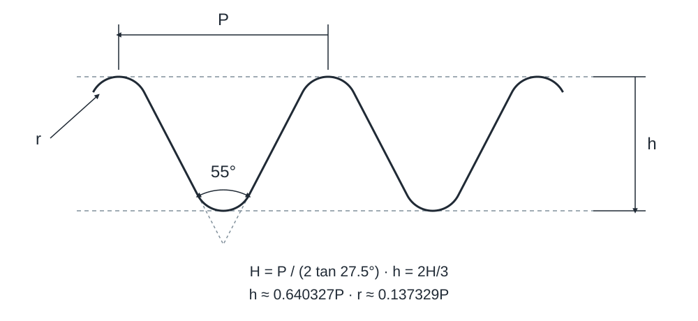

Filetages de tuyauterie ISO 228 pour joints sans étanchéité dans le filetage
Les données attendent une vérification complète selon la norme actuelle. Les valeurs originales sont conservées; ne pas les considérer comme des dimensions limites vérifiées.

Filetages de tuyauterie ISO 228 pour joints sans étanchéité dans le filetage · D = d [mm] – d_2 A [µm]
| Filetage | Filets par pouce | Pas P [mm] | D = d [mm] | D_2 = d_2 [mm] | D_1 = d_1 [mm] | d [µm] | d_2 A [µm] |
|---|---|---|---|---|---|---|---|
| G1/16 | 28 | 0,907 | 7,723 | 7,142 | 6,561 | 0 -214 | 0 -107 |
| G1/8 | 28 | 0,907 | 9,728 | 9,147 | 8,566 | 0 -214 | 0 -107 |
| G1/4 | 19 | 1,337 | 13,157 | 12,301 | 11,445 | 0 -250 | 0 -125 |
| G3/8 | 19 | 1,337 | 16,662 | 15,806 | 14,950 | 0 -250 | 0 -125 |
| G1/2 | 14 | 1,814 | 20,955 | 19,793 | 18,631 | 0 -284 | 0 -142 |
| G5/8 | 14 | 1,814 | 22,911 | 21,749 | 20,587 | 0 -284 | 0 -142 |
| G3/4 | 14 | 1,814 | 26,441 | 25,279 | 24,117 | 0 -284 | 0 -142 |
| G7/8 | 14 | 1,814 | 30,201 | 29,039 | 27,877 | 0 -284 | 0 -142 |
| G1 | 11 | 2,309 | 33,249 | 31,770 | 30,291 | 0 -360 | 0 -180 |
| G1 1/8 | 11 | 2,309 | 37,897 | 36,418 | 34,939 | 0 -360 | 0 -180 |
| G1 1/4 | 11 | 2,309 | 41,910 | 40,431 | 38,952 | 0 -360 | 0 -180 |
| G1 1/2 | 11 | 2,309 | 47,803 | 46,324 | 44,845 | 0 -360 | 0 -180 |
| G1 3/4 | 11 | 2,309 | 53,746 | 52,267 | 50,788 | 0 -360 | 0 -180 |
| G2 | 11 | 2,309 | 59,614 | 58,135 | 56,656 | 0 -360 | 0 -180 |
| G2 1/4 | 11 | 2,309 | 65,710 | 64,231 | 62,752 | 0 -434 | 0 -217 |
| G2 1/2 | 11 | 2,309 | 75,184 | 73,705 | 72,226 | 0 -434 | 0 -217 |
| G2 3/4 | 11 | 2,309 | 81,534 | 80,055 | 78,576 | 0 -434 | 0 -217 |
| G3 | 11 | 2,309 | 87,884 | 86,405 | 84,926 | 0 -434 | 0 -217 |
| G3 1/2 | 11 | 2,309 | 100,330 | 98,851 | 97,372 | 0 -434 | 0 -217 |
| G4 | 11 | 2,309 | 113,030 | 111,551 | 110,072 | 0 -434 | 0 -217 |
| G4 1/2 | 11 | 2,309 | 125,730 | 124,251 | 122,772 | 0 -434 | 0 -217 |
| G5 | 11 | 2,309 | 138,430 | 136,951 | 135,472 | 0 -434 | 0 -217 |
| G5 1/2 | 11 | 2,309 | 151,130 | 149,651 | 148,172 | 0 -434 | 0 -217 |
| G6 | 11 | 2,309 | 163,830 | 162,351 | 160,872 | 0 -434 | 0 -217 |
Filetages de tuyauterie ISO 228 pour joints sans étanchéité dans le filetage · d_2 B [µm] – D_1 [µm]
| Filetage | Filets par pouce | Pas P [mm] | d_2 B [µm] | D_2 [µm] | D_1 [µm] |
|---|---|---|---|---|---|
| G1/16 | 28 | 0,907 | 0 -214 | +107 0 | +282 0 |
| G1/8 | 28 | 0,907 | 0 -214 | +107 0 | +282 0 |
| G1/4 | 19 | 1,337 | 0 -250 | +125 0 | +445 0 |
| G3/8 | 19 | 1,337 | 0 -250 | +125 0 | +445 0 |
| G1/2 | 14 | 1,814 | 0 -284 | +142 0 | +541 0 |
| G5/8 | 14 | 1,814 | 0 -284 | +142 0 | +541 0 |
| G3/4 | 14 | 1,814 | 0 -284 | +142 0 | +541 0 |
| G7/8 | 14 | 1,814 | 0 -284 | +142 0 | +541 0 |
| G1 | 11 | 2,309 | 0 -360 | +180 0 | +640 0 |
| G1 1/8 | 11 | 2,309 | 0 -360 | +180 0 | +640 0 |
| G1 1/4 | 11 | 2,309 | 0 -360 | +180 0 | +640 0 |
| G1 1/2 | 11 | 2,309 | 0 -360 | +180 0 | +640 0 |
| G1 3/4 | 11 | 2,309 | 0 -360 | +180 0 | +640 0 |
| G2 | 11 | 2,309 | 0 -360 | +180 0 | +640 0 |
| G2 1/4 | 11 | 2,309 | 0 -434 | +217 0 | +640 0 |
| G2 1/2 | 11 | 2,309 | 0 -434 | +217 0 | +640 0 |
| G2 3/4 | 11 | 2,309 | 0 -434 | +217 0 | +640 0 |
| G3 | 11 | 2,309 | 0 -434 | +217 0 | +640 0 |
| G3 1/2 | 11 | 2,309 | 0 -434 | +217 0 | +640 0 |
| G4 | 11 | 2,309 | 0 -434 | +217 0 | +640 0 |
| G4 1/2 | 11 | 2,309 | 0 -434 | +217 0 | +640 0 |
| G5 | 11 | 2,309 | 0 -434 | +217 0 | +640 0 |
| G5 1/2 | 11 | 2,309 | 0 -434 | +217 0 | +640 0 |
| G6 | 11 | 2,309 | 0 -434 | +217 0 | +640 0 |
Filetages de tuyauterie ISO 228 pour joints sans étanchéité dans le filetage · D = d [mm] – d_2 A [µm]
| Filetage | Filets par pouce | Pas P [mm] | D = d [mm] | D_2 = d_2 [mm] | D_1 = d_1 [mm] | d [µm] |
|---|---|---|---|---|---|---|
| G1/16 | 28 | 0,907 | 7,723 | 7,142 | 6,561 | 0 -214 |
| G1/8 | 28 | 0,907 | 9,728 | 9,147 | 8,566 | 0 -214 |
| G1/4 | 19 | 1,337 | 13,157 | 12,301 | 11,445 | 0 -250 |
| G3/8 | 19 | 1,337 | 16,662 | 15,806 | 14,950 | 0 -250 |
| G1/2 | 14 | 1,814 | 20,955 | 19,793 | 18,631 | 0 -284 |
| G5/8 | 14 | 1,814 | 22,911 | 21,749 | 20,587 | 0 -284 |
| G3/4 | 14 | 1,814 | 26,441 | 25,279 | 24,117 | 0 -284 |
| G7/8 | 14 | 1,814 | 30,201 | 29,039 | 27,877 | 0 -284 |
| G1 | 11 | 2,309 | 33,249 | 31,770 | 30,291 | 0 -360 |
| G1 1/8 | 11 | 2,309 | 37,897 | 36,418 | 34,939 | 0 -360 |
| G1 1/4 | 11 | 2,309 | 41,910 | 40,431 | 38,952 | 0 -360 |
| G1 1/2 | 11 | 2,309 | 47,803 | 46,324 | 44,845 | 0 -360 |
| G1 3/4 | 11 | 2,309 | 53,746 | 52,267 | 50,788 | 0 -360 |
| G2 | 11 | 2,309 | 59,614 | 58,135 | 56,656 | 0 -360 |
| G2 1/4 | 11 | 2,309 | 65,710 | 64,231 | 62,752 | 0 -434 |
| G2 1/2 | 11 | 2,309 | 75,184 | 73,705 | 72,226 | 0 -434 |
| G2 3/4 | 11 | 2,309 | 81,534 | 80,055 | 78,576 | 0 -434 |
| G3 | 11 | 2,309 | 87,884 | 86,405 | 84,926 | 0 -434 |
| G3 1/2 | 11 | 2,309 | 100,330 | 98,851 | 97,372 | 0 -434 |
| G4 | 11 | 2,309 | 113,030 | 111,551 | 110,072 | 0 -434 |
| G4 1/2 | 11 | 2,309 | 125,730 | 124,251 | 122,772 | 0 -434 |
| G5 | 11 | 2,309 | 138,430 | 136,951 | 135,472 | 0 -434 |
| G5 1/2 | 11 | 2,309 | 151,130 | 149,651 | 148,172 | 0 -434 |
| G6 | 11 | 2,309 | 163,830 | 162,351 | 160,872 | 0 -434 |
Filetages de tuyauterie ISO 228 pour joints sans étanchéité dans le filetage · D = d [mm] – d_2 A [µm]
| Filetage | d_2 A [µm] |
|---|---|
| G1/16 | 0 -107 |
| G1/8 | 0 -107 |
| G1/4 | 0 -125 |
| G3/8 | 0 -125 |
| G1/2 | 0 -142 |
| G5/8 | 0 -142 |
| G3/4 | 0 -142 |
| G7/8 | 0 -142 |
| G1 | 0 -180 |
| G1 1/8 | 0 -180 |
| G1 1/4 | 0 -180 |
| G1 1/2 | 0 -180 |
| G1 3/4 | 0 -180 |
| G2 | 0 -180 |
| G2 1/4 | 0 -217 |
| G2 1/2 | 0 -217 |
| G2 3/4 | 0 -217 |
| G3 | 0 -217 |
| G3 1/2 | 0 -217 |
| G4 | 0 -217 |
| G4 1/2 | 0 -217 |
| G5 | 0 -217 |
| G5 1/2 | 0 -217 |
| G6 | 0 -217 |
Filetages de tuyauterie ISO 228 pour joints sans étanchéité dans le filetage · d_2 B [µm] – D_1 [µm]
| Filetage | Filets par pouce | Pas P [mm] | d_2 B [µm] | D_2 [µm] | D_1 [µm] |
|---|---|---|---|---|---|
| G1/16 | 28 | 0,907 | 0 -214 | +107 0 | +282 0 |
| G1/8 | 28 | 0,907 | 0 -214 | +107 0 | +282 0 |
| G1/4 | 19 | 1,337 | 0 -250 | +125 0 | +445 0 |
| G3/8 | 19 | 1,337 | 0 -250 | +125 0 | +445 0 |
| G1/2 | 14 | 1,814 | 0 -284 | +142 0 | +541 0 |
| G5/8 | 14 | 1,814 | 0 -284 | +142 0 | +541 0 |
| G3/4 | 14 | 1,814 | 0 -284 | +142 0 | +541 0 |
| G7/8 | 14 | 1,814 | 0 -284 | +142 0 | +541 0 |
| G1 | 11 | 2,309 | 0 -360 | +180 0 | +640 0 |
| G1 1/8 | 11 | 2,309 | 0 -360 | +180 0 | +640 0 |
| G1 1/4 | 11 | 2,309 | 0 -360 | +180 0 | +640 0 |
| G1 1/2 | 11 | 2,309 | 0 -360 | +180 0 | +640 0 |
| G1 3/4 | 11 | 2,309 | 0 -360 | +180 0 | +640 0 |
| G2 | 11 | 2,309 | 0 -360 | +180 0 | +640 0 |
| G2 1/4 | 11 | 2,309 | 0 -434 | +217 0 | +640 0 |
| G2 1/2 | 11 | 2,309 | 0 -434 | +217 0 | +640 0 |
| G2 3/4 | 11 | 2,309 | 0 -434 | +217 0 | +640 0 |
| G3 | 11 | 2,309 | 0 -434 | +217 0 | +640 0 |
| G3 1/2 | 11 | 2,309 | 0 -434 | +217 0 | +640 0 |
| G4 | 11 | 2,309 | 0 -434 | +217 0 | +640 0 |
| G4 1/2 | 11 | 2,309 | 0 -434 | +217 0 | +640 0 |
| G5 | 11 | 2,309 | 0 -434 | +217 0 | +640 0 |
| G5 1/2 | 11 | 2,309 | 0 -434 | +217 0 | +640 0 |
| G6 | 11 | 2,309 | 0 -434 | +217 0 | +640 0 |